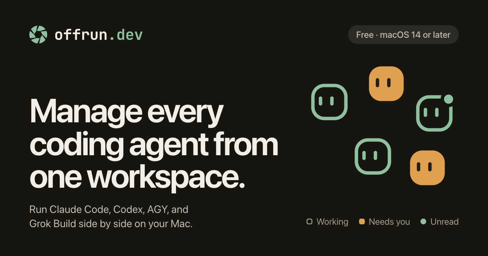
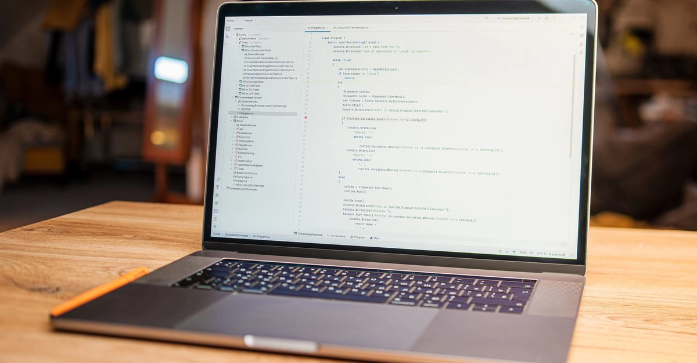
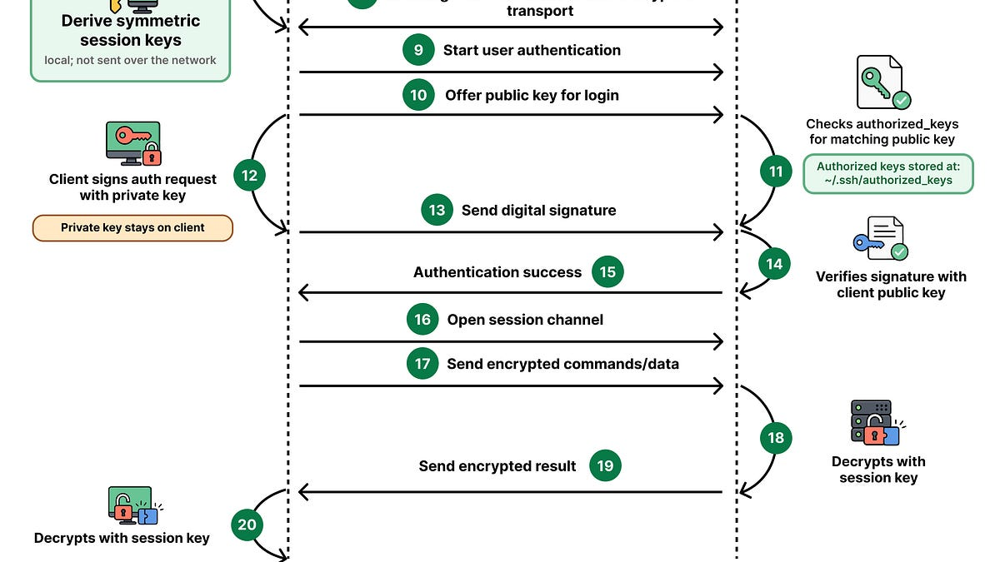

🔥 Top 3 (must read)
Getting the most out of Opus 5.5 in Claude and Claude Code
(HN discussion, 177 points, 126 comments) Anthropic's guide on how to work with Opus 5.5 inside Claude and Claude Code. It covers prompting habits, when to let the agent run longer, and how to set up a project so the model has the right context. Why it matters: You use Claude Code daily. A first-party guide is the fastest way to find habits your team is missing.

We're going to need default hard budget caps on pretty much everything
Simon Willison argues that pay-by-usage APIs and agent products need hard caps by default: after $X per month, the service must stop and return errors. Soft caps that only send a warning email are not enough, because coding agents and personal agents can burn money in a loop while nobody watches. Why it matters: As an EM rolling out coding agents to a team, cost control is now a real risk you own. This is a simple policy to adopt before an agent surprises you with a bill.
S
Show HN: Offrun – manage every coding agent from one workspace
(HN discussion, 74 points, 61 comments) Offrun is a workspace that lets you run and watch several coding agents (Claude Code, Copilot, and others) from one place. The HN thread has a lively debate on whether a shared control plane for agents is useful or just one more tool to learn. Why it matters: If your team uses more than one agent, this is one answer to the "ten terminals open" problem. The comments are a good read on what people actually want from such a tool.

🤖 AI for developers
Parsing JSON from Thinking-Model APIs
reasoning models often return structured output split across several content parts, with prose or thought signatures in front. Good checklist of what breaks in a naive "find the first
{" parser and how to handle it.
👔 Engineering & teams
EP228: How SSH Works
ByteByteGo's visual walkthrough of SSH: TCP connection, key exchange, and authentication. Handy as a refresher or to hand to a junior engineer before they touch production servers.

🎯 For me
Opus 5.5 guide
The is the closest hit today. Compare its tips with how your team configures Claude Code and look for gaps.
Hard budget caps
is an EM topic in disguise. Check which of your AI and cloud accounts only have soft limits.
S
Offrun
is worth a look if several people on the team run different coding agents.
Nothing on Node.js, React, Flutter, Playwright, or Maestro today.
💡 App ideas & indie builds
Thoreau BASIC – What if BASIC hadn't gone out of fashion?
(HN discussion) — a modern BASIC language and environment that asks how the language would look if it had kept evolving. The user problem is the high entry barrier of today's toolchains for beginners and hobby coders. Inspiration angle: nostalgia plus a very low "first program" cost is a strong hook for a learning or tinkering app.
T
🎓 Try this
Set a hard spending cap on every pay-by-usage account your team uses for coding agents and LLM APIs. Go through each provider's billing page today and switch soft warnings to hard limits where the option exists. Simon Willison's post explains why: default hard budget caps.